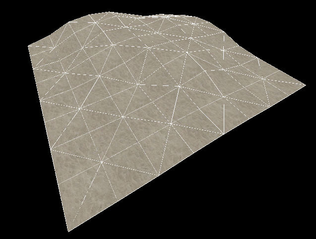
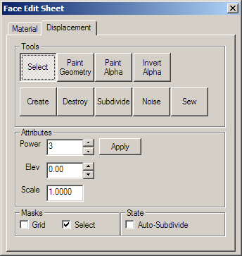
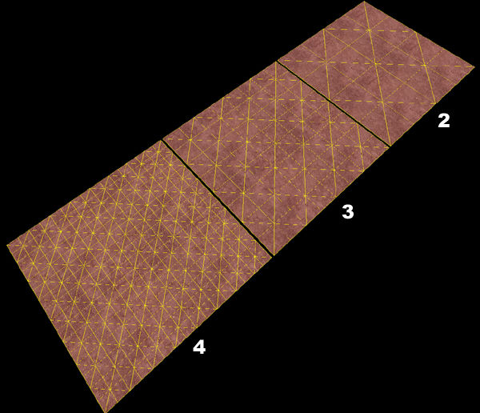
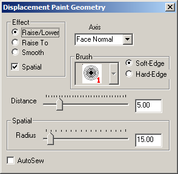
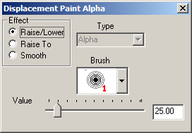
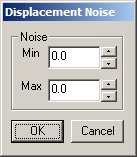
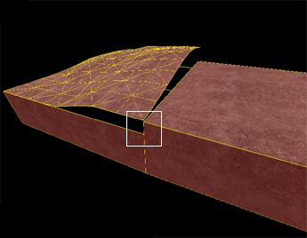

Dialogs: Face Edit, Displacements
Selecting the Texture Application Tool brings up the Face Edit Sheet dialog box. The Displacement tab is contains tools to create and edit displacement geometry. The Materials tab contains tools that are used to edit texture properties of objects on a per face level. See Face Edit, Materials.
Displacement geometry are brush surfaces that have been converted to a triangle mesh of faces that can be freely distorted and sculpted into various shapes. The primary function for displacement surfaces is to create terrain -- hills, valleys, trenches, slopes, etc.
|  |
| A displacement surface. |
The Displacement tab in the Face Edit dialog allows you to create and manipulate the displacement surfaces on the selected brush faces. To select a brush face, click on it in the 3D view with the left mouse button. To select multiple faces, hold down the CTRL key while you do this. You can also select multiple brushes before selecting the Texture Application tool.

There are a number of Tools available in Face Edit Displacements tab:
Select
The tool used to select brush and displacement faces for editing. CTRL-click to add faces to the selection, and SHIFT-click a brush to invert the selection of all faces on the brush.
Create
Create a new displacement surface on the selected brush faces. Displacements come in three levels of resolution: 2, 3, or 4. The following image shows the levels of displacement resolution:
|  |
| The options for Power - the displacement resolution. |
Destroy
Delete the selected displacement surfaces, reverting them back to non-displacement faces on the base brush.
Paint Geometry
Opens the Displacement Paint Geometry panel, which allows you to modify the geometry of the selected displacements using the painting tools.
Effect
Determines what type of geometry painting you wish to do:
- Raise/Lower - Increase or decrease the height of the geometry effected. Left-clicking raises the geometry along the current axis, Right-clicking lowers it. The Distance slider determines how far the geometry moves with each mouse click.
- Raise to - Sets the height of the geometry to the height specified in the Distance slider, in world units relative the displacement's base brush face.
- Smooth - Averages the position of the geometry, effectively smoothing out variations.
Spatial
Enables spatial painting mode. Turning this flag off puts the tools into brush painting mode. Spatial painting uses a three-dimensional sphere to determine the geometry that is effected by the painting. Brush painting uses a fixed-vertex brush that effects a set number of vertices surrounding the vertex the brush is centered on.
Axis
Determines the axis that what direction faces will move when painted:
- X, Y, Z - Painted geometry will move along the world axis X, Y, or Z only, regardless of the direction of the displacement direction.
- Face Normal - Painted geometry will move along an axis determined by the normal of one specific face. Change the direction by using ALT+Right-click on any face in the 3D view. The normal of the clicked face will become the direction of subsequent painting.
- Subdiv Normal - Painted geometry will move along an axis determined by the curve generated after using the Subdivide command on a set of faces.
Brush
When in brush painting mode, selecting a brush here will use that brush size to determine what geometry is altered when painting. The number next to each brush icon represents how many vertices wide the brush is. For example, a "3" brush will affect all vertices within a 3 vertex radius of where you clicked on a displacement. Brush selection is disabled while in Spatial painting mode.
Soft-Edge/Hard-Edge
Switches the falloff of painting when in spatial editing mode. In Soft-Edge mode, geometry near the center of the painting sphere will be most affected by painting operations, with the effect diminishing towards the edges of the sphere. In Hard-Edge mode, all geometry will be identically affected by painting operations, regardless of their position in the sphere.
These controls only affect Spatial painting mode, and are disable when Spatial painting is not active.
Distance
When in Raise/Lower mode, this slider sets the amount that geometry will move with each click while painting geometry, as a distance of world units. For example, if the Distance slider is set to "5", each click with the left mouse button while in Raise/Lower painting mode will move the geometry 5 world units.
While in Raise To mode, this slider sets the height that geometry will move to, in world units. For example, if the Distance slider is set to "128", each click with the left mouse button while in Raise/Lower painting mode will move the geometry to exactly 128 world units from the base brush face.
The Distance slider has no effect while in Smooth painting mode.
Radius
Sets the size of the painting sphere while in Spatial painting mode. The slider value can also be set by holding down ALT and clicking and dragging with the left mouse button in the 3D View, while Spatial painting mode is active. The Radius slide only affects Spatial painting mode, and is disabled when Spatial painting is turned off.
Autosew
Enabling this option will force Hammer to automatically do a Sew command after every paint operation on the selected geometry. Note: enabling Autosew while a large number of displacement surfaces are selected can drastically affect performance. See the Sew command for more information.
Basic Displacement Creation
How to create and paint a displacement surface:
- Create a brush with the Block Tool that will be used a the base for the created displacement surface.
- Click the Texture Application tool to bring up the Face Edit dialog, and select the Displacement tab.
- In the 3D view, left-click on a brush face to select it. CTRL-click to add or remove faces from the current selection.
- Click Create in the Displacement tab. Enter a value from 2 to 4 for the displacement density and click OK.
- Select the Paint Geometry tool on the Displacement tab. The Paint Geometry panel will open.
- In the 3D View, Left-click on a displacement to raise a section, and right-click to lower it. Use the Radius slider in the Paint Geometry panel to control the size of the painting sphere.
Paint Alpha
Opens the Displacement Paint Alpha panel, which allows you to paint the alpha channel for the selected displacements. The alpha channel controls the visibility of two separate textures on the displacement surface. Note: Alpha channel values only affect displacements with materials containing the proper blended material shader.
Effect
Determines what type of alpha painting you wish to do:
- Raise/Lower - Increase or decrease the alpha value of the vertices affected. Left-clicking raises the alpha value, Right-clicking lowers it. The Value slider determines have quickly the value will change as you paint.
- Raise to - Sets the alpha value of the affected vertices to the value specified in the Value slider, from 0 to 255.
- Smooth - Averages the alpha value of the affected vertices, effectively smoothing out any variations.
Brush
When in alpha painting mode, selecting a brush here will use that brush size to determine which vertices are altered when painting. The number next to each brush icon represents how many vertices wide the brush is. For example, a "3" brush will affect all vertices within a 3 vertex radius of where you clicked on a displacement.
Value
When in Raise/Lower mode, this slider sets the how quickly the alpha values will change with each click while painting geometry.
While in Raise To mode, this slider sets the exact alpha value that each vertex will be set to, from 0 to 255.
The Value slider has no effect while in Smooth painting mode.
Subdivide
Create a smooth subdivision surface out of two or more selected displacement surfaces. Note: Subdividing a large number of displacement surfaces simultaneously requires a lot of computation, and can take a significant amount of time to complete.
Noise
Add random noise to the selected displacement surface. The Min value sets the greatest distance in units that a point on the displacement will move downward along the face normal. Max sets the greatest distance upward along the face normal. Clicking OK will randomize the position of the points on the displacement somewhere between these two values.
Sew
Connect the edges of two or more selected displacement surfaces. You can sew displacement surfaces in any of the following circumstances:
- Any two displacements whose base brushes surfaces share a common edge when coincident endpoints.
- Displacements with different resolution settings.
- A displacement surface to a non-displacement brush face, as long as the base face of the displacement shares a common edge.
- A displacement surface to another displacement surface where a shared edge is exactly half the width of the other (called a T-junction).
Examples of circumstances where the Sew command can be used:
|
|
||||
|
|
Surfaces cannot be sewn together if the base faces of the displacements do not share a common edge:
|  |
| Surfaces that don't share a common edge cannot be connected. |
Attributes
Different attributes that can be changed for displacement surfaces.
- Power - Sets the resolution of the displacement. Possible values are 2, 3, and 4.
- Apply - Commits any changes to the Power value.
- Elev - Changes the distance of the displacement from the base face.
- Scale - Scales the displacement "height" -- the distance from the base face .
- Invert Alpha - Inverts all alpha data on the selected displacements.
Masks
These options change the way displacement surfaces are displayed when selected in the 3D Views. Enabling the Grid mask disables the drawing of the wireframe displacement grids when selecting displacements. Choosing Select disables the red shading of selected displacements.
Auto-Subdivide
Enabling this option will continually re-subdivide displacement surfaces while they're being painted, on any displacement surfaces that have had subdivisions applied previously. Choosing this option requires additional processing power, so Hammer may be less responsive to painting functions while this is enabled.
Related Topics
Displacement Mask and Displacement Edge Collapse icons from the Map Operations toolbar.
Hotkey Reference for Displacement Editing keyboard shortcuts.
© 2004 Valve Corporation. All rights reserved. Valve, the Valve logo, Half-Life, the Half-Life logo, the Lambda logo, Steam, the Steam logo, Team Fortress, the Team Fortress logo, Opposing Force, Day of Defeat, the Day of Defeat logo, Counter-Strike, the Counter-Strike logo, Source, the Source logo, Hammer and Counter-Strike: Condition Zero are trademarks and/or registered trademarks of Valve Corporation. Microsoft and Visual Studio are trademarks and/or registered trademarks of Microsoft Corporation. All other trademarks are property of their respective owners.